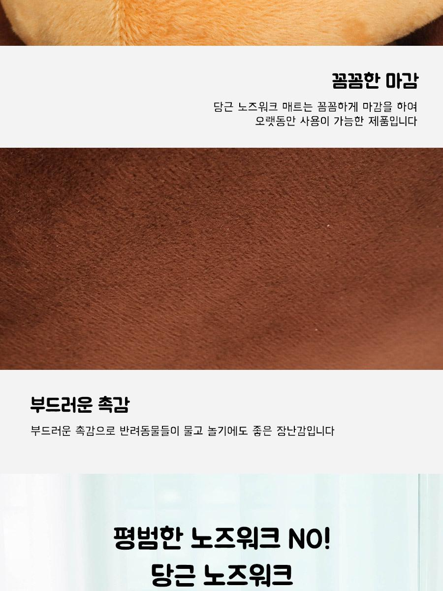
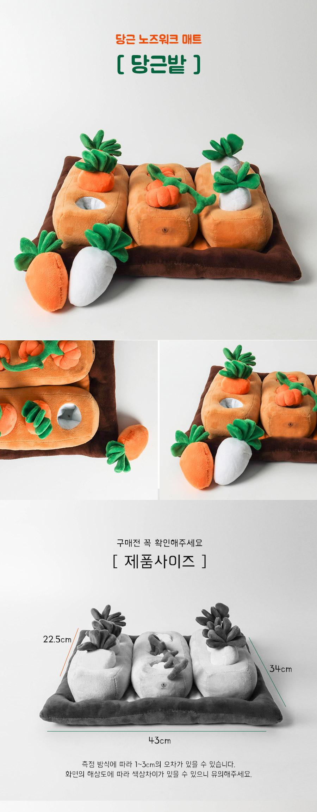

마이크를 켜는 순간
발밑의 낑낑거림에 급히 음소거를 누르고, 반려견을 달래느라 회의의 흐름이 끊깁니다.
화상회의만 시작하면, 발밑에서 놀아 달라고 보채나요?
폭신한 밭 속에 간식을 숨겨 두세요. 반려견은 코로 찾고 당근을 뽑으며 스스로 놀이를 이어갑니다.
쿠팡에서 옵션 확인하기안내 이 포스팅은 쿠팡 파트너스 활동의 일환으로, 이에 따른 일정액의 수수료를 제공받습니다.

재택근무자의 하루
발밑의 낑낑거림에 급히 음소거를 누르고, 반려견을 달래느라 회의의 흐름이 끊깁니다.
금세 먹고 다시 돌아온 반려견에게 미안하지만, 당장 손을 멈추기도 어렵습니다.
플라스틱 퍼즐의 충격음이 신경 쓰여 오래 꺼내 두기 망설여집니다.

놀이 방법
평면 매트를 핥는 데서 끝나지 않고, 냄새를 찾고 인형을 뽑는 행동까지 자연스럽게 이어집니다.

밭 블록마다 숨어 있는 간식 구멍을 확인합니다.
처음에는 입구 가까이에 두고, 익숙해지면 조금 더 깊게 넣어 난이도를 조절합니다.
반려견이 냄새를 맡고 코와 입으로 인형을 뽑아 간식을 찾습니다.
제품 구조
패브릭과 충전재로 만든 봉제 구조가 바닥을 두드리는 딱딱한 충격 부담을 덜어줍니다.

극세사 겉감과 PP 충전재를 사용한 폭신한 봉제 구조입니다.
밭 블록 속에 간식을 숨기고 분리형 당근 인형으로 입구를 가릴 수 있습니다.
바닥에는 실리콘 도트 가공이 적용되어 놀이 중 밀림을 줄이는 데 도움을 줍니다.

확인된 규격
당근밭 기준 약 34 × 43cm입니다. 측정 위치에 따라 1-3cm 정도 차이가 날 수 있습니다.

구매 전 확인
아이의 체형과 놀이 습관에 맞춰 시작하고, 사용 뒤에는 깨끗하게 수거해 주세요.
처음에는 간식을 구멍 입구 가까이에 두고 당근을 느슨하게 얹어 주세요. 아이가 방법을 익히면 간식 위치와 꽂는 깊이를 조절할 수 있습니다.
이 제품은 씹기용 장난감이 아닙니다. 처음에는 보호자가 지켜보고, 간식을 모두 찾은 뒤에는 제품을 수거해 주세요. 훼손이 보이면 사용을 중단해야 합니다.
세탁망에 넣어 부드러운 코스로 세탁하고 통풍이 잘되는 그늘에서 충분히 자연 건조해 주세요. 고온 건조는 피하는 편이 좋습니다.
오늘의 작은 준비
옵션, 가격, 배송 정보는 쿠팡 상품 페이지에서 바로 확인하실 수 있습니다.
쿠팡에서 옵션 확인하기안내 이 포스팅은 쿠팡 파트너스 활동의 일환으로, 이에 따른 일정액의 수수료를 제공받습니다.